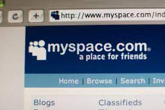
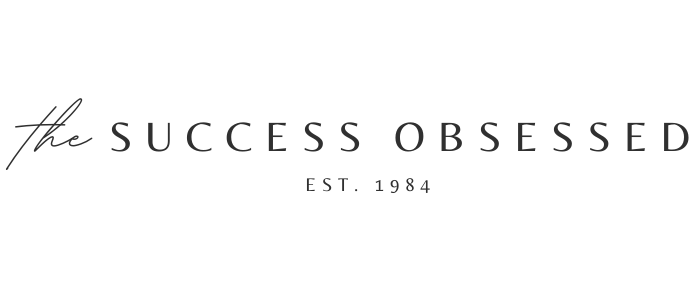

An Oddyssey
-by Tammy L Walls
In the Beginning
My first exposure to programming was when my mother pursued and earned a degree in programming when I was very young. All I really knew was that she made things called "flow charts" using a cool stencil tool and that I got to go to college (daycare) with her sometimes.
I believe that my school taught us short units on logo in second through sixth grade. If you would like to test it out, here is an emulator, and here is a list of the commands.
In high school and early college I was really into jazzing up my MySpace page.

I basically had no Idea what I was doing. I would go just find code online and add it into my page to make it do cool things.
In the Middle
After some time, I decided I'd like to try my hand at blogging. I purchased a couple of online courses and watched countless tutorials.

I ended up developing a beautiful wordpress website and even gained a few subscribers (who weren't friends or family).
In the process of building the website, I learned a bit about web development. I also learned how little I realy knew. I realized that I was completely vulnerable, as I had no idea how my page really worked. I became interested in understanding how things worked behind the scenes
In the Present
Eventually, I happened upon a recommendation for Scrimba. I checked out the platform and decided it was the best option for learning coding that I'd seen. I completed the HTML and CSS crash course and discovered that I really enjoyed it.
Scrimba also opened my eyes to the fact that I could pursue programming as a career. I decided that it was worth exploring more indepth options. A friend mentioned the LaunchCode program.
I took a chance and applied. Now I am fully immersed in learning and I am so excited to see where this takes me.
In the Future
I am not positive where I am headed. I am very interested in app development and I also have a soft spot for developing websites. We shall see.